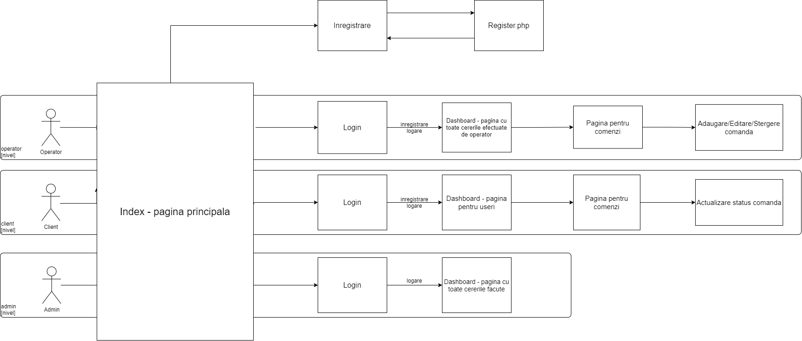

CleanAll este o aplicatie bazata pe tehnologiile web si este creat pentru a usura oamenilor nevoia de a-si spala rufele.
CleanAll este proiectul nostru la Web Tehnologies. Ofera functionalitatea de a crea o comanda (pentru client), respectiv crearea si actualizarea unui status privind spalarea rufelor(disponibil numai pentru operatori). Are urmatoarele functionalitati:
Am realizat proiectul cu scopul de a afla care sunt provocarile pe care le implica o astfel de sarcina si conceptul de "laundry-app" pe care se bazeaza.
In aceasta parte vom prezenta functionalitatile aplicatiei, explicand rolul si metoda de implementare fiecaruia.
O cunoscuta componenta vizibila pentru utilizator este cea de log-in - implementata prin HTML si CSS. Prin partea de log-in, utilizatorul se va inregistra in baza de date a aplicatiei si va avea permisiunea de a utiliza aplicatia. Avem trei tipuri de utilizatori: clientul (care are rolul de a crea o cerere si a vedea istoricul cererilor), operatorul (persoana care se duce sa ia rufele dintr-un loc anume si le aduce inapoi curatate/improspatate) si adminul (care gestioneaza atat operatorii, cat si clientii).
Pe langa partea de log-in, exista si partea de register (inregistrare), ce necesita completarea cu numele, prenumele, emailul si parola. Aceste date vor fi inserate in baza de date a aplicatiei, rezultand in persoana avand posibilitatea de a utiliza aplicatia.
Pentru a fi accesibila pe un ecran mai mic (cum ar fi telefonul), am implementat un meniu ce apare in partea de sus a ecranului. Acesta este una dintre componentele de baza ale aplicatiei web intrucat ofera utilizatorilor actiunile care pot fi intreprinse prin intermediul aplicatiei. Partea de front-end a acestuia a fost implementata folosind HTML, CSS si Javascript. Meniul constituie din doua parti: una ce trimite utilizatorul atat la detaliile aplicatiei, cat si la partea de log-in/inregistrare, iar cealalta ce duce la lista de comenzi facute (reprezentat intr-un tabel in HTML) si la partea de log-out (iesire din aplicatie).
Dashboard-ul aplicatiei include detalii legate de cererile facute pana acum, avand o implementare simpla de HTML, CSS, inclusiv Javascript.
Aceasta parte contine un tabel cu toate cererile create de client, avand data plasarii, data terminarii, numarul de articole, tipurile de articole (indicat de Nr. pozitii) si statusurile acelor cereri. Utilizatorii au posibilitatea de a sorta crescator/descrescator fiecare coloana din acel tabel. Filtrarea este o alta functionalitate ce ajuta la selectarea comenzilor dupa un anumit tip, si este folositoare pentru operatorii aplicatiei.
Acele statusuri sunt facute pentru a notifica clientul de situatia comenzii, desigur, acesta poate fi actualizata numai de operatorul responsabil de comanda respectiva.
Clientul are posibilitatea ori de a crea o comanda, introducand ce imbracaminte vrea sa puna la spalat, ori de a o sterge, in cazul in care se razgandeste. Totodata, acesta poate sa modifice comanda, la fel, ori prin a adauga mai multe haine in lista, ori prin a le sterge din lista. Pe langa comanda creata, poate sa modifice si data preluarii acelei comenzi.
